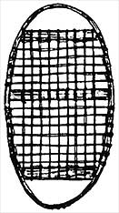

Making Your Own Snowshoes
Traversing snowy terrain in the Native American style, including diagrams, framing, construction
By C. Keith Wilbur
November/December 1990
IT'S POSSIBLE-just possible-that the Paleo-Indians wore snowshoes to invade the American continent. After all, they were in use in Asia before America was peopled. Once over the iced-in Bering Strait and into Alaska, the snowshoe would have permitted hunting on the receding glaciers. Floundering mastodons, mammoths, musk-ox, beaver, elk and deer could be tracked, surrounded and dispatched.
These ancient snow feet gradually became known eastward. Probably of solid wood, they generally had a toe hole, crossbars to reinforce the underside, and side frames. Each tribe adapted the wooden plank to its own liking, resulting in a variety of sizes and shapes. Although this slow and awkward winterwear may still be found, tie bear paw snowshoe that followed was far and away the better answer to the drifting snows of New England.
Two main types of shoe developed: the short, tailless bear paw (best for rough, wooded terrain and a longer, narrow bear paw with a tail. The latter type is most appropriate for open country and racing.
Early on, the bear paw was simply a round or oval frame that was bent from a branch with the ends lashed together. The filling was of rawhide strips-sometimes strips of bark or pieces of vine-woven in an unsystematic way and attached to the frame by wrapping. The earliest bear paw had no toe hole (that was a later development and was lashed firmly to the foot. Worn as big, flat shoes, each had to be lifted and lowered as occurs with ordinary walking.
The invention of the toe hole allowed the snowshoe to be dragged instead of the exhausting raising of each shoe. Thongs were secured to the ball of the foot, to the toe hole, then brought behind the heel. In this way the heel could be raised while the toes were lowered while walking.
Other niceties accompanied the change. The rawhide filling that supported the foot was usually woven in a hexagonal ("lattice" or "cane chair") pattern. Crossbars of wood-at first not mortised into the frame-lent sturdiness to the shoe. Often the rear of the frame was pointed to give a sort of rudder that was dragged when the shoe was lifted.
IN GENERAL, the New England snowshoe had these characteristics:
Bearpaw or point heel frames of a single bent strip of wood, never two-piece frames.
Rounded toe (occasionally Penobscots had square toes.
Toe hole (lacking in the Wampanoag shoes.
Hexagonal rawhide weave (the Wampanoags alone had a rectangular weave. All weaves were wrapped around the frame. Except for those of the Wampanoag, Nipmuc and Massachusetts tribes, the toe and heel sections were filled with fine rawhide, attached to a selvage thong.
Bear paws held a single mortised crossbar, the pointed heels had two, and the Wampanoag shoes had three crossbars. All the snowshoes were flat with no upturned toes.
THE FRAME
Constructing Snowshoes
(see Image Gallery for details)
LIVE WOOD is flexible-so much so that it may be bent into a curve without breaking, and then dried to hold its shape. Choose the right sapling, have a snowshoe mold ready for shaping, and the big winter shoes will be ready for the netting in several weeks.
STEAMING THE WOOD
To BACKTRACK just a bit-live green ash or hickory, readied by nature for bending, may be difficult to come by. A local lumberyard may be able to supply these woods, usually air-dried and planed to a 3/4" thickness. From the plank, several 7' (or slightly longer lengths are cut 3/q " wide. Each stave will therefore be 7' x j/4" x 3/4". Try to have the grain straight down the length to give the frame maximum strength. Shave the center and tail sections as shown previously, have the shoe molds and wedges ready for action, and the wood is ready for steaming. Only the penetration of the fibers with hot moisture will give enough pliability for bending.
A steaming box can be made from scrap wood with no regard for beauty. Piece as necessary. At the center of the bottom, cut a circle slightly smaller than a #to tin can (or any like-size container. Fill the can with water and refill as necessary.
Rest the center of the box on the can. Pound in end supports to allow contact between can rim and the bottom of the box. An hour of steaming should do the trick. Bend the wood to shape on the snowshoe molds without delay.
Steaming or soaking the staves may help the bending.
Lacing the Frame
FOR CENTURIES,rawhide lacing was the made-to-order filling for snowshoe frames. Strips from green dehaired hides were tough and durable enough to challenge the sturdiest snowstorms. Woven wet, the netting would shrink on drying to give a webbed support second to no other material-that is, until neoprene lacing upstaged the natural product. Made of synthetic rubber sandwiching tough nylon fibers, this modern substitute outwears the old rawhide three to one, takes less lacing know-how, refuses to ice up, will not rot and needs no varnish to prevent stretching and sagging.
Therefore, in the face of tradition, neoprene will be used in the following directions.
Start with 13 yards of 5/16"- to 1/2"-inch neoprene for each shoe of the Massachusetts/Nipmuc style. Since lacing can be a frustrating experience, the added effort of filling the more northern shoes with a selvage thong and weaving will not be discussed here.
We have chosen the one-piece frame with a round toe and pointed heel and the hexagonal filling only between the toe and heel crossbars as characteristic of the earlier New England snowshoes. The lack of netting in the toe and heel spaces seems to make this type no less efficient than the later selvage toe and heel filling. Some feel the former is more useful on crusted snow, while others give strong arguments for its general versatility. Your handcrafted snowshoes will let you draw your own conclusions.
USE: Since both shoes are the same, there is no right or left. Briefly, the dragging tail acts as something of a rudder. Only the toe of the snowshoe is lifted, and then only a thumb's width above the surface of the snow. This is much less tiring than lifting the entire snowshoe. The knees are slightly bent, with the body swinging along in a side-to-side motion.
An experienced snowshoer is known by his or her tracks. The shoe tracks will be close together-accomplished by bringing the rear shoe forward, close to the inner ankle. Snowshoe racers have been known to travel a mile in five minutes.
C. Keith Wilbur, a physician now retired from family practice, is the author of to books. He lives in Northampton, Massachusetts.
Reprinted with permission from Indian Handcrafts, by C Keith Wilbur copyright © 1990. Published by The Globe Pequot Press, Chester, CT 06412; $13.95 paper.
|
WAMPANOAG. The bear paw (left) is the earliest shoe with one-piece frame, rectangular weaving and no toe hole. MASSACHUSETTS/NIPMUC (opposite page). Developed from the bear paw, it has a one-piecerame, rounded toe, toe hole, and hexagonal weave limited to the center between crossbars. |
 PENOBSCOT (above) and ABENAKI (below) are later developments, with sharper toes and filled toe and heel spaces with weaving tied to a selvage thong. |
Bones for stretching rawhide-;Penobscot. Museum of Natural History, New York City |
|
Penobscot wooden needle with rawhide Museum of Natural History, New York City |
Cut two forms from 3/4"" scrap wood. Each square equals 1 inch. |
Locate the frame's inner face (that nearest the bark and opposite to the split log faces). Mark the inner face as shown above and shave the two ends and center to give easier bending. Gradually bend the frame to rest inside the form blocks and drive in the wedges. (Steaming or soaking the staves may help the bending-see page 24.) The frame is now snug against the shoe form. Dry for several weeks. |
|
Blocks of wood are nailed 1-1/4"" from the form where the wedges eater. Twelve wedges are needed. The opposite end of each block is 1"" from the form |
Several thicknesses of burlap cover both ends. |
Measurements vary according to the scrap wood available and the diameter of the can. Raise the staves off the steambox floor with pieces of wood at each end. |
|
With the two forms prepared, search out several straight, knot-free ash or hickory saplings. A length of at least 7' for each frame is needed. Square down to 3/4"" with a drawshave or crooked knife, or select a tree of 4"" to 5"" at the butt end. Split down the center with chisels. |
With the drawshave or crooked knife, trim both split surfaces flat. Clamp a 3i4"" strip of wood, and pencil each edge. |
Cut cross fibers free |
|
This face will become the outer surface of the snowshoe frame. When squared, the stave will be 3/4"" x 3/4"" x 7'. |
With two lengths of freshly cut ash or hickory, each 7' long and squared to 3/4"" |
|
 Crossbars: Split out four pieces 1-3/8"" wide and 5/16"" thick. Place each is position behind the frame and mark. Add 1/4"" to fit into frame. Make a series of drilled holes 3/16"" in diameter and 1/4"" deep. Gut away the wood between and fit the crossbars. When snug, drill holes at the tail and push through a finish nail that extends lib"" on both sides. Bend both projections with a hammer for a secure closure. |
Tidy up the shoe by sanding the frame andslightly rounding the edges. The crossbars should also be rounded. Apply several coats of a rugged spar varnish. |
Mark off the frame measurements as shown. Start by making a slit near the end of the lacing. Feed the lacing through and snug around the first mark. Keep lacing tight. |
|
INDIAN TIM HARNESS. Properly tied, the foot should not slide forward to collect blisters. The tie should also be loose enough not to chafe the top of the moccasin. A twist of the foot should shake the snowshoe free. Buckskin or rope may be used. |
|
|